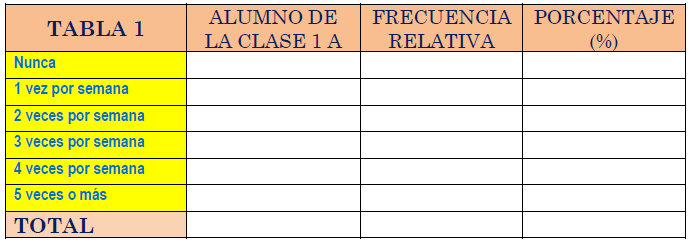

¡Nos convertimos en investigadores estadísticos!
Creamos las tablas de frecuencias
Las tablas
Una vez realizada la encuestas, debemos de ordenar y recopilar la información, y para ello utilizaremos las tablas de frecuencias.
¿Con qué frecuencia ayudas en casa?
Tras analizar las respuestas obtenidas con la primera pregunta de la encuesta, completa la siguiente tabla:
Frecuencia con la que colaboras en casa.

Para rellenar la primera casilla de la segunda columna, se realiza el conteo de cuantos alumnos de la clase de 1A nunca colabora en casa; para el caso de la segunda casilla de la segunda columna contamos cuántos alumnos ayudan una vez por semana, y así sucesivamente... A estos datos se le llaman frecuencias absolutas.
Para obtener la frecuencia relativa hay que dividir el dato de la columna anterior (frecuencia absoluta) por el tamaño de la muestra (N).
La columna de porcentajes se obtiene multiplicando por 100 la columna de frecuencia relativa.
¿Cómo colaboras?
Veamos la implicación del alumnado en las seis actividades propuesta en la encuesta:
- Hacer la cama.
- Barrer.
- Tirar la basura.
- Recoger la mesa
- Lavar la vajilla.
- Ir por el pan.
Veremos cómo afecta al grupo completo y como se diferencia por sexo. Completa la siguiente tabla.
¿Cuánto tiempo dedicas semanalmente a ordenar tu cuarto?
Y ahora abordaremos la última pregunta del cuestionario. La estudiaremos por sexo. Completa la siguiente tabla.
Rúbrica
| Experto | Avanzado | Aprendiz | Novel | |
|---|---|---|---|---|
| Formato de Celdas | Utiliza formatos avanzados y personalizados para resaltar la información de manera clara y legible (2) | Utiliza adecuadamente formatos de celdas para presentar la información de manera clara y legible. (2) | Utiliza formatos básicos de celdas, pero no de manera consistente o clara. (1) | No utiliza formatos de celdas adecuadamente. (0) |
| Rellenado de celdas | Rellena todas las casillas de manera correcta, sin errores ni omisiones. (4) | Rellena la mayoría de las casillas de manera correcta, con pocos errores u omisiones. (3) | Rellena algunas casillas de manera correcta, pero con varios errores u omisiones. (2) | No rellena la mayoría de las casillas de manera correcta. (1) |
| Organización y Presentación | Organiza y presenta la información de manera excepcional, facilitando la comprensión y visualización de los datos. (4) | Organiza y presenta la información de manera clara y ordenada, facilitando la comprensión de los datos. (3) | Organiza la información de manera básica, pero con fallos en la presentación que dificultan la comprensión. (2) | Presenta la información de manera desorganizada y poco clara, dificultando la comprensión de los datos. (1) |
- Actividad
- Nombre
- Fecha
- Puntuación
- Notas
- Reiniciar
- Imprimir
- Aplicar
- Ventana nueva
Afianzando conceptos
¿Tienes problemas con la tarea? No te preocupes, un poquito de ayuda.
Actividades para practicar. Pincha aquí. Podrás practicar y no te preocupes si no te sale, en la propia web te comenta donde se ha producido el error y cómo se hace.
Videotutorial de ayuda
Obra publicada con Licencia Creative Commons Reconocimiento Compartir igual 4.0